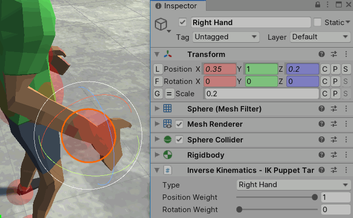

Difficulty: Intermediate - Recommended after Quick Play
Location: Assets/Plugins/Animancer/Examples/08 Inverse Kinematics/01 Puppet
Namespace:
Animancer.Examples.InverseKinematics
This example demonstrates how you can use Unity's Inverse Kinematics system to control a character's limbs like a puppet and have them look at a specific point.

We use a very simple MouseDrag script to allow the user to drag the IK targets around (it would work on any object with a Collider component, but the IK targets are the only objects in this scene that have them):
using System;
using UnityEngine;
public sealed class MouseDrag : MonoBehaviour
{
private Transform _Dragging;
private void Update()
{
// On click, do a raycast and grab whatever it hits.
if (Input.GetMouseButtonDown(0))
{
var ray = Camera.main.ScreenPointToRay(Input.mousePosition);
RaycastHit hit;
if (Physics.Raycast(ray, out hit))
{
_Dragging = hit.transform;
}
}
// While holding the button, move the object in line with the mouse ray.
else if (_Dragging != null && Input.GetMouseButton(0))
{
var ray = Camera.main.ScreenPointToRay(Input.mousePosition);
var distance =
Vector3.Dot(_Dragging.position, ray.direction) -
Vector3.Dot(ray.origin, ray.direction);
_Dragging.position = ray.origin + ray.direction * distance;
}
else
{
_Dragging = null;
}
}
}
Enabling IK
As explained on the Inverse Kinematics page, you can enable IK in Animancer by setting AnimancerLayer.ApplyAnimatorIK:
private void Awake()
{
_Animancer.Layers[0].ApplyAnimatorIK = true;
}
Unity actually implements this setting per state (in AnimationClipPlayable) rather than per layer (in AnimationLayerMixerPlayable), so Animancer simply propogates the value from AnimancerLayer.ApplyAnimatorIK to the AnimancerState.ApplyAnimatorIK of every state connected to that Layer and also to the AnimancerLayer.DefaultApplyAnimatorIK which determines the value for any new states that are created. You can of course set the value for individual states yourself if necessary. The ApplyFootIK setting also works similarly and is demonstrated in the Uneven Ground example.
That is actually the only Animancer-specific thing in this example (other than the NamedAnimancerComponent in the scene to play the Idle animation). Everything else from here on works exactly the same as if you were using Mecanim.
Center of Mass
After we enable ApplyAnimatorIK, Unity will call the OnAnimatorIK method every frame in any scripts attached to the same object as the Animator. Note that due to limitations in the Playables API, Unity will only ever pass layerIndex = 0 as the parameter, even if you are using multiple Layers.
The first thing we do in the IKPuppet script is use the Transform of a target object to control the position and rotation of the character's center of mass:
[SerializeField] private Transform _BodyTarget;
private void OnAnimatorIK(int layerIndex)
{
_Animancer.Animator.bodyPosition = _BodyTarget.position;
_Animancer.Animator.bodyRotation = _BodyTarget.rotation;
}
That lets the character move around with the target, which is not very interesting on its own (and could have easily been done without IK):

Look At
Then we want to control where the character is looking:
[SerializeField] private IKPuppetLookTarget _LookTarget;
private void OnAnimatorIK(int layerIndex)
{
...
_LookTarget.UpdateAnimatorIK(_Animancer.Animator);
}
The IKPuppetLookTarget is also quite simple:
using UnityEngine;
public sealed class IKPuppetLookTarget : MonoBehaviour
{
[SerializeField, Range(0, 1)] private float _Weight = 1;
[SerializeField, Range(0, 1)] private float _BodyWeight = 0.3f;
[SerializeField, Range(0, 1)] private float _HeadWeight = 0.6f;
[SerializeField, Range(0, 1)] private float _EyesWeight = 1;
[SerializeField, Range(0, 1)] private float _ClampWeight = 0.5f;
public void UpdateAnimatorIK(Animator animator)
{
animator.SetLookAtWeight(_Weight, _BodyWeight, _HeadWeight, _EyesWeight, _ClampWeight);
animator.SetLookAtPosition(transform.position);
}
}
By attaching that script to an object with a Collider (so the MouseDrag script can let us move it around) we get the ability to control where the character looks, with various parameters in the Inspector to control its details:

Hands and Feet
Controlling the character's hands and feet is also quite simple. We just need an array of targets:
[SerializeField] private IKPuppetTarget[] _IKTargets;
private void OnAnimatorIK(int layerIndex)
{
...
for (int i = 0; i < _IKTargets.Length; i++)
{
_IKTargets[i].UpdateAnimatorIK(_Animancer.Animator);
}
}
And another simple script to hold their details (which are different from the look target):
using UnityEngine;
public sealed class IKPuppetTarget : MonoBehaviour
{
[SerializeField] private AvatarIKGoal _Type;// Determines which limb this target applies to.
[SerializeField, Range(0, 1)] private float _PositionWeight = 1;
[SerializeField, Range(0, 1)] private float _RotationWeight = 0;
public void UpdateAnimatorIK(Animator animator)
{
animator.SetIKPositionWeight(_Type, _PositionWeight);
animator.SetIKRotationWeight(_Type, _RotationWeight);
animator.SetIKPosition(_Type, transform.position);
animator.SetIKRotation(_Type, transform.rotation);
}
}
So now we have control over the character's center of mass, head, hands, and feet:
The full IKPuppet script looks like this:
using Animancer;
using UnityEngine;
public sealed class IKPuppet : MonoBehaviour
{
[SerializeField] private AnimancerComponent _Animancer;
[SerializeField] private Transform _BodyTarget;
[SerializeField] private IKPuppetLookTarget _LookTarget;
[SerializeField] private IKPuppetTarget[] _IKTargets;
private void Awake()
{
_Animancer.Layers[0].ApplyAnimatorIK = true;
}
private void OnAnimatorIK(int layerIndex)
{
_Animancer.Animator.bodyPosition = _BodyTarget.position;
_Animancer.Animator.bodyRotation = _BodyTarget.rotation;
_LookTarget.UpdateAnimatorIK(_Animancer.Animator);
for (int i = 0; i < _IKTargets.Length; i++)
{
_IKTargets[i].UpdateAnimatorIK(_Animancer.Animator);
}
}
}
Rotation
You can also select any of the limb targets in the Hierarchy and use its Inspector to modify its details, including the weight with which it affects the position and rotation. By default, we set the _RotationWeight = 0 since the MouseDrag script does not give us an easy way to visualise or control rotations, but if you would like to see it in action you can just increase the weight and use the Transform Inspector of the Scene view gizmo to rotate the object:

Reset
This example also uses a really simple script to allow a UI Button to reset all the IK targets to their starting positions and rotations:
public sealed class TransformResetter : MonoBehaviour
{
[SerializeField] private Transform[] _Transforms;
private Vector3[] _StartingPositions;
private Quaternion[] _StartingRotations;
private void Awake()
{
var count = _Transforms.Length;
_StartingPositions = new Vector3[count];
_StartingRotations = new Quaternion[count];
for (int i = 0; i < count; i++)
{
var transform = _Transforms[i];
_StartingPositions[i] = transform.localPosition;
_StartingRotations[i] = transform.localRotation;
}
}
// Called by the UI Button.
// This method is not called Reset because that is a MonoBehaviour message (like Awake).
// That would cause Unity to call it in Edit Mode when we first add this component.
// And since the _StartingPositions would be null it would throw a NullReferenceException.
public void ReturnToStartingValues()
{
for (int i = 0; i < _Transforms.Length; i++)
{
var transform = _Transforms[i];
transform.localPosition = _StartingPositions[i];
transform.localRotation = _StartingRotations[i];
}
}
}